🚀 Bienvenido a
Orbital
Explora el espacio, recoge señales misteriosas y domina la física orbital. ¿Estás listo?
Iniciar Juego
Ver Controles

Oops ... your browser doesn't support the HTML5 canvas element
 
